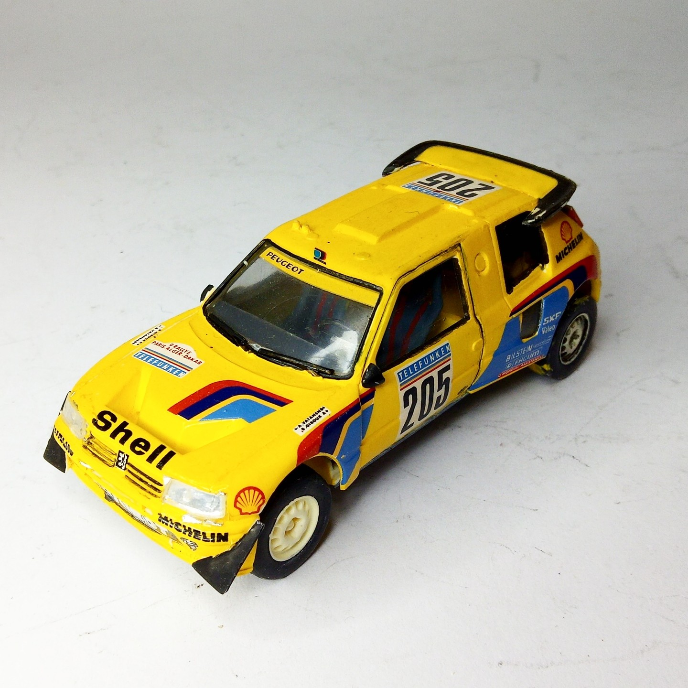
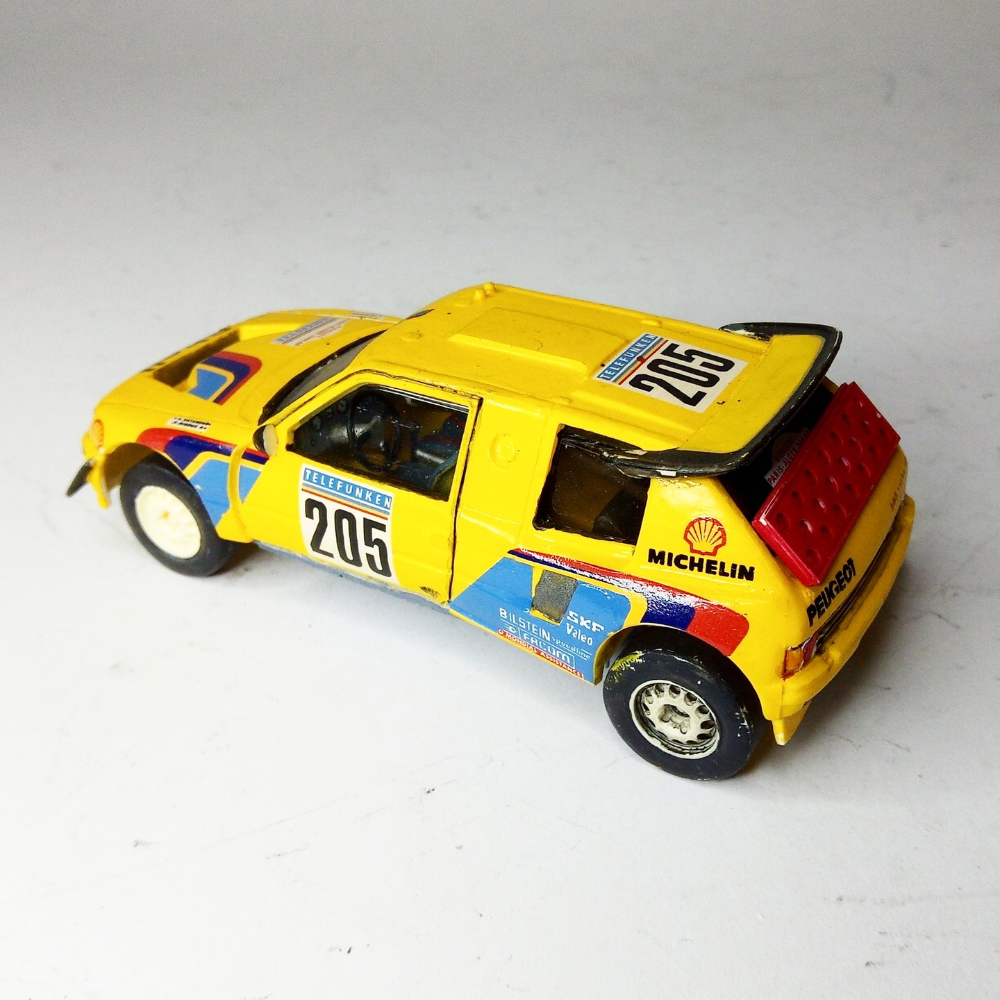

Auto e veicoli stradali · scale model archive
Peugeot 205 Paris Dakar
Peugeot 205 Paris Dakar — Kit: Heller. Scale 1/43 #Peugeot #205 Impressive tranformation of a Peigeot 205 with longer wheelbase and mid ngine…

Photo gallery

English description
Scale 1/43 #Peugeot #205
Impressive tranformation of a Peigeot 205 with longer wheelbase and mid ngine
https://www.youtube.com/watch?v=ivIvEkNQRio
#1/43 #Heller
Descrizione italiana
Notevole trasformazione di una Peugeot 205 con passo allungato e motore centrale.
Maggiori informazioni: https://www.youtube.com/watch?v=ivIvEkNQRio